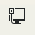
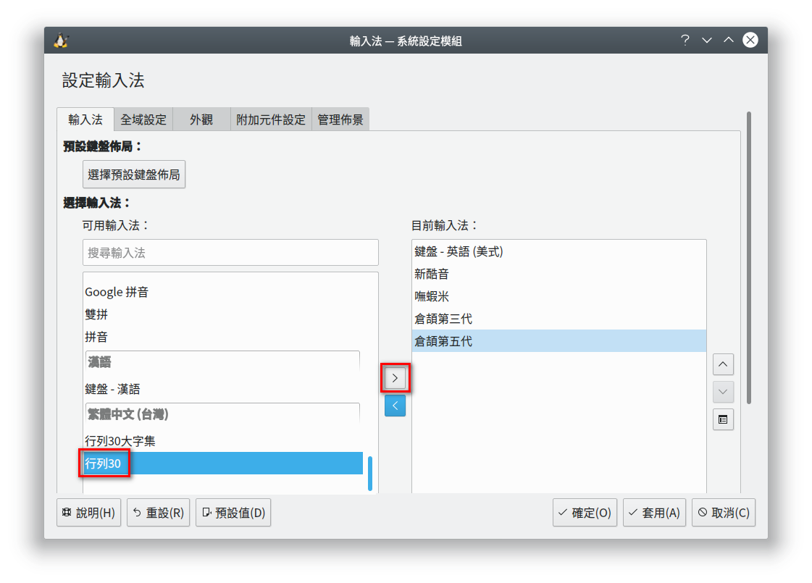
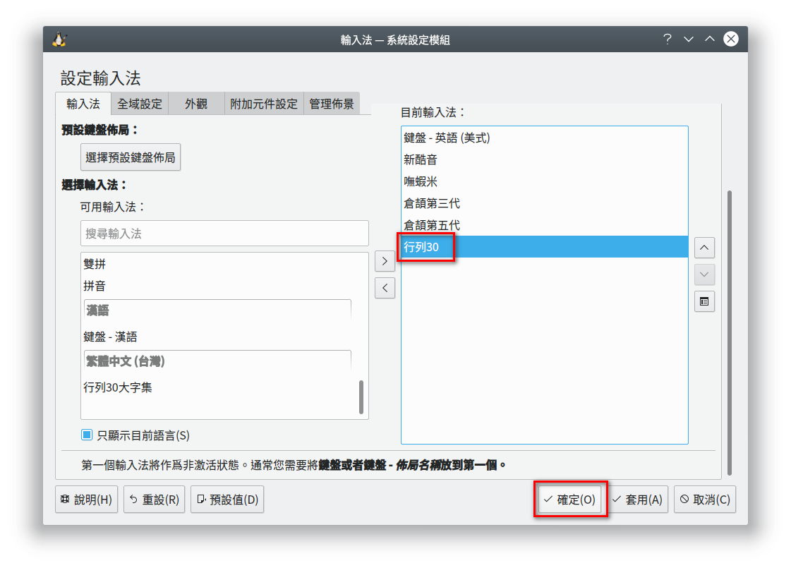

7.輸入法設定
切換各種輸入法
◎中英輸入法切換 Ctrl + 空白鍵
我們現在所使用的 Linux 電腦環境，如果想要打中文字，只要按『 Ctrl + 空白鍵』就可以切換成中文
輸入法，想要切換回英文輸入法，只要再按一次『 Ctrl + 空白鍵』就可以囉！
所以 『 Ctrl + 空白鍵』就是中英輸入法的快速切換鍵。
◎各種輸入法切換 Ctrl + Shift 鍵
中文輸入法的種類非常的多，有注音、倉頡、大易、...等，剛剛我們介紹按 『 Ctrl + 空白鍵』可以
輕易的切換中英輸入法，但有可能切換過去時，正好不是您熟悉的輸入法，比如說您想用倉頡輸入法，
結果切換過去時卻顯示新酷音輸入法，那怎麼辦呢?
別擔心，此時您只要在任何一個中文輸入法的狀態下，按住 Ctrl 鍵不放，然後連續按 Shift 鍵就可以循環切換出各種中文輸入法，這樣您是不是有找到
您熟悉的輸入法了呢?
◎操作步驟 A：透過鍵盤切換
步驟一：先按［Ctrl + 空白鍵］切換到任一個中文輸入法。
步驟二：再按［Ctrl + Shift 鍵］進行其他輸入法切換。
◎操作步驟 B：透過滑鼠切換
步驟一：在『』的圖示上選按滑鼠的『右鍵』顯示快顯功能表。
步驟二：選按快顯功能表［輸入法］的選項。
步驟三：在輸入法的快速切換選單中選按『您欲切換的輸入法』即可，如： 新酷音或倉頡。
{kind=link}
常用輸入法的安裝
中文輸入法的種類非常多，有注音、倉頡、大易、...等，若系統中沒有您所使用的輸入法，您可以依
如下的步驟將常用的輸入法安裝起來便於使用。
步驟一：在『』的圖示上選按滑鼠的『右鍵』顯示快顯功能表。
步驟二：選按快顯功能表［設定］的選項。

步驟三：選按［欲安裝的輸入法］，如：行列30，再按『>』按鈕，以安裝輸入法。

{kind=link}
步驟三：在［目前輸入法］的窗格中，看到［欲安裝的輸入法］，如：行列30，再按『確定』
即完成輸入法的安裝
。

{kind=link}
標點符號的輸入
打完了中文字，接著要打句號『。』可是卻找不到句號『。』，那怎麼辦?
除了句號『。』還有很多
常用的中文標點符號，如：頓號『、』、單引號『「」』、雙引號『『』』等，想要打出這些常用的
中文標點符號，該怎麼辦？
一般而言，嘸蝦米、行列及大易輸入法，可以從字根中直接輸入上述的標點符號，但是新酷音(注音)及
倉頡則無法直接從字根輸入，但是您可以參考如下方式輸入常用的標點號：
| 標點符號 | 新酷音輸入法 | 倉頡輸入法 |
| ， | shift + ， | ， |
| 。 | shift + ． | ． |
| ？ | shift + / | shift + / (要先切換成全形) |
| ！ | shift + 1 (Q 上方那個 1 鍵) | shift + 1 (Q 上方那個 1 鍵) |
| ： | shift + ; | shift + ; |
| ； | shift + ' (Enter 旁邊那個單引號) | ; + 空白鍵或 Enter 鍵 |
| 、 | ' (Enter 旁邊那個單引號) | \ (Enter 上方那個反斜線) |
| 「 | [ | [ |
| 」 | ] | ] |
| 『 | shift + [ | shift + [ |
| 』 | shift + ] | shift + ] |